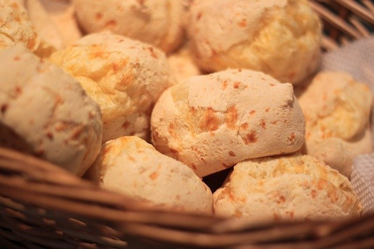

Pão de Queijo

A traditional savory from the state of Minas Gerais, it's served at festive events along with other snacks, but also at breakfast.
Ingredients
- 100ml milk
- 40g butter
- 200g sour tapioca flour
- 200g grated cheese
- 1 egg
- Salt to taste
Steps
- Preheat the oven to 180°C
- Boil the milk and butter in a saucepan until it boils
- Pour the mixture on flour and mix to make a pasta
- Pour the grated cheese and mix. Lay the eggs and mix again. Pour the salt.
- Make small balls(with oiled hands) and bake on a medium heat until golden.
Return to main page